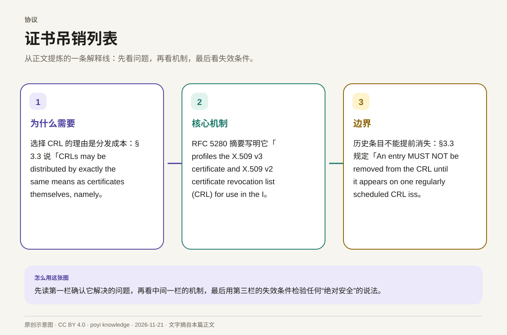
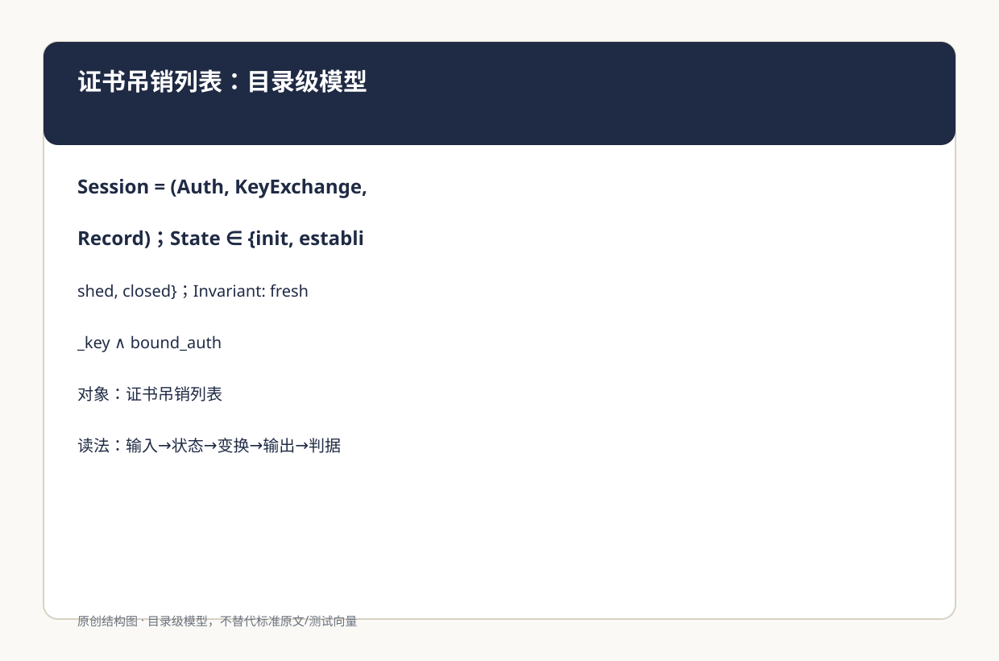

原理与机制
协议：证书吊销列表（Certificate Revocation List）。RFC 5280 摘要写明它「profiles the X.509 v3 certificate and X.509 v2 certificate revocation list (CRL) for use in the Internet.」§3.3 描述机制：「This method involves each CA periodically issuing a signed data structure called a certificate revocation list (CRL).」并定义其内容——「A CRL is a time-stamped list identifying revoked certificates that is signed by a CA or CRL issuer and made freely available in a public repository.」定位方式很窄：「Each revoked certificate is identified in a CRL by its certificate serial number.」§5.1.2 列出必填字段：「The required fields identify the CRL issuer, the algorithm used to sign the CRL, and the date and time the CRL was issued.」

为什么重要
选择 CRL 的理由是分发成本：§3.3 说「CRLs may be distributed by exactly the same means as certificates themselves, namely, via untrusted servers and untrusted communications.」依赖方则要同时看签名与状态——「that system not only checks the certificate signature and validity but also acquires a suitably recent CRL and checks that the certificate serial number is not on that CRL.」为让缓存与新旧比较可判定，§5.2 强制两个扩展：「Conforming CRL issuers are REQUIRED to include the authority key identifier (Section 5.2.1) and the CRL number (Section 5.2.3) extensions in all CRLs issued.」§5.2.3 解释作用：「The CRL number is a non-critical CRL extension that conveys a monotonically increasing sequence number for a given CRL scope and CRL issuer.」
应用与实例
撤销触发条件被列举，§3.3 含「Such circumstances include change of name, change of association between subject and CA」以及「compromise or suspected compromise of the corresponding private key.」时间字段有硬约束：§5.1.2.5 说「Conforming CRL issuers MUST include the nextUpdate field in all CRLs.」§5.1.2.4 规定编码分界——「CRL issuers conforming to this profile MUST encode thisUpdate as UTCTime for dates through the year 2049.」空列表也有规则：§5.1.2.6「When there are no revoked certificates, the revoked certificates list MUST be absent.」§5.3 建议携带原因：「CRL issuers SHOULD include reason codes (Section 5.3.1) and invalidity dates (Section 5.3.2) whenever this information is available.」

边界与攻击面
历史条目不能提前消失：§3.3 规定「An entry MUST NOT be removed from the CRL until it appears on one regularly scheduled CRL issued beyond the revoked certificate's validity period.」§6.3 的校验算法假定有取新机制：「if the next update time of a CRL has passed, the algorithm assumes a mechanism to fetch a current CRL and place it in the local CRL cache.」可处理性也有限制，§5.2 说「If a CRL contains a critical extension that the application cannot process, then the application MUST NOT use that CRL to determine the status of certificates.」并且 CRL 不是唯一手段：§3 写「Revocation status information may be provided using the Online Certificate Status Protocol (OCSP) [RFC2560], certificate revocation lists (CRLs), or some other mechanism.」§5 允许 CA 不出 CRL：「Conforming CAs are not required to issue CRLs if other revocation or certificate status mechanisms are provided.」
历史与背景
RFC 5280 署名 D.Cooper、S.Santesson、S.Farrell、S.Boeyen、R.Housley 与 W.Polk，2008 年 5 月发布，头部标「Obsoletes: 3280, 4325, 4630」。§1 把它定位成标准族的一部分：「This specification is one part of a family of standards for the X.509 Public Key Infrastructure (PKI) for the Internet.」§5.1.1 记录 CA 的密钥选择：「MAY use one private key to digitally sign certificates and CRLs, or MAY use separate private keys」。§8 澄清保密性不是前提：「Since certificates and CRLs are digitally signed, no additional integrity service is necessary.」
逐步示例与核验
形式模型与复算步骤
[\mathrm{Adv}^{\Pi}_A(\lambda)\le n\cdot\mathrm{Adv}^{\mathrm{prf}}F(\lambda)+\varepsilon{\mathrm{aead}}(\lambda)]
证书吊销列表的公开参数、密钥/随机数与消息；变量说明：Π 协议，A 敌手，n 会话数，PRF/AEAD 为底层原语。1.把协议消息序列写成状态机。2.用混合论证逐个替换原语。3.把剩余优势归约到 PRF/AEAD 安全。边界：公式只覆盖已登记的参数与假设；参数取值、标准版本和实现细节仍以来源为准。
参考出处
- Wikipedia search entry for 证书吊销列表. https://zh.wikipedia.org/w/index.php?search=%E8%AF%81%E4%B9%A6%E5%90%8A%E9%94%80%E5%88%97%E8%A1%A8
- Handbook of Applied Cryptography (Menezes, van Oorschot, Vanstone). https://www.cacr.math.uwaterloo.ca/hac/